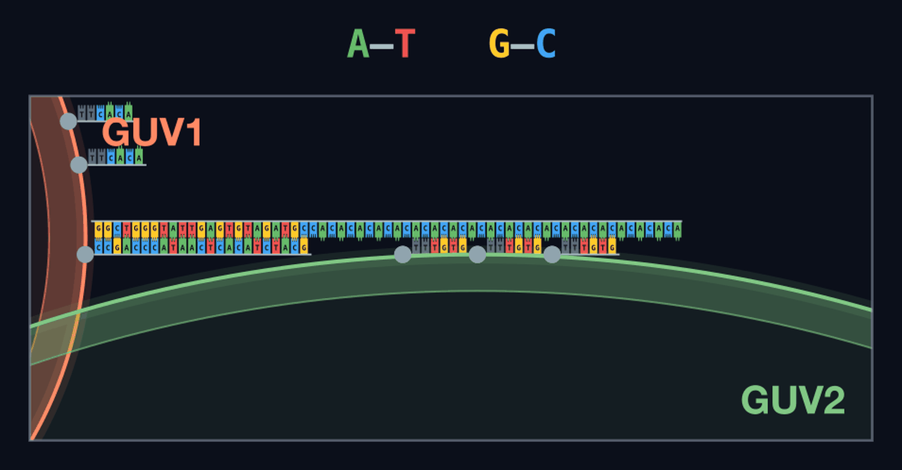

Design
What is the ALiGN
ALiGN (Accurately Linkable GUV Network) is our technology for building networks of GUVs. Its goal is controlled communication between GUVs: to connect GUVs in an intended pattern and with an intended number of partners, and to exchange materials between the connected GUVs.
In this project we connect three GUVs (GUV1, GUV2 and GUV3). This requires two different connections, GUV1–GUV2 and GUV2–GUV3, that must not interfere with each other. If we can design these two connections independently, the same idea should extend to three, four or more connections, and to larger networks of GUVs.
To achieve this, ALiGN is built on four elements in two groups.
Connection (see Specific Connection Between GUVs)
1. Sequence-specific binding: DNA pairs with different sequences connect each GUV only to its intended partner.
2. Weak binding: very weak DNA binding controls how many partners each GUV connects to.
Material exchange (see Pore Formation for Material Exchange)
3. Exchange through pores: α-hemolysin forms pores so that connected GUVs can exchange their contents.
4. Blocking leakage: TRIMEB acts as a lid on the pores, so that GUVs that are not connected do not leak their contents.
Specific Connection Between GUVs
ALiGN controls connections between GUVs in two ways: with whom each GUV connects (sequence-specific binding) and how many partners it connects to (weak binding).
Sequence-Specific Binding
To connect only the intended partners, we place single-stranded DNA on the surface of each GUV and use the complementarity of DNA. A GUV can bind only to a GUV that carries the complementary strand.
We prepare two DNA pairs with different sequences: one for the GUV1–GUV2 connection and one for the GUV2–GUV3 connection. Because the sequences are different, each pair recognizes only its own partner, and the two connections do not interfere with each other. As a result, GUV1 connects to GUV2 and GUV2 connects to GUV3, but GUV1 does not connect to GUV3.
Weak Binding
Choosing the right partner is not enough to control the number of connections. Even with specific DNA, a GUV could connect to many partners of the right type at the same time, and GUVs could gather into large aggregates. If only a few DNA strands were enough to keep a connection, GUVs would keep gathering.
Therefore, we use very short 6-nt DNA strands and design each duplex to be very weak. A single duplex cannot hold two GUVs together; a connection holds only when many strands bind at the same time.
Once a GUV connects to its intended partner, most of the strands on the facing surfaces are used in that connection. The few strands left over are not enough to hold an extra partner, so the GUV does not connect any further. The key parameter is therefore the surface density of DNA on each GUV. By tuning it through simulation and experiments, we aim to obtain many sets of exactly three GUVs connected as GUV1–GUV2–GUV3.
Pore Formation for Material Exchange
Connecting GUVs is not the final goal of ALiGN. We also want connected GUVs to exchange their contents, like cells that communicate with each other. For this, two things are required at the same time: connected GUVs must be able to exchange their contents, and GUVs that are not connected must not leak their contents to the outside. We achieve the first with α-hemolysin and the second with TRIMEB.
α-Hemolysin as a Pore
α-Hemolysin is a pore-forming protein from Staphylococcus aureus. Its subunits assemble in a lipid membrane and form a pore that small molecules and ions can pass through. By forming α-hemolysin pores in the GUV membrane, we open a path for the contents of a GUV to move to a connected GUV.
TRIMEB as a Lid
An open pore alone would let the contents of a GUV leak out even when it is not connected to any partner. To prevent this, we use TRIMEB (heptakis(2,3,6-tri-O-methyl)-β-cyclodextrin), a derivative of β-cyclodextrin that fits into the α-hemolysin pore and blocks it like a lid.
While a GUV is floating alone, the lid keeps its contents inside. When two GUVs are connected and their membranes come close to each other, contents can be exchanged between them. In this way, material exchange happens only between connected GUVs.
DNA Sequence Design
These are the DNA strands used in ALiGN. Each strand that sits on a GUV carries a thiol (SH) modification, which anchors it to the GUV membrane.
6-nt DNA (Main Design)
Weak-binding strands for connecting GUVs with an intended number of partners (see Weak Binding). Each strand has a 4-nt binding part (ACAC / GTGT or AGAG / CTCT) and a TT spacer on the membrane side. All strands carry SH at the 3′ end.
Pair 1 (GUV1 – GUV2)
Conn6_L1: 5′-ACACTT-3′ (SH)
Conn6_R1: 5′-GTGTTT-3′ (SH)
Pair 2 (GUV2 – GUV3)
Conn6_L2: 5′-AGAGTT-3′ (SH)
Conn6_R2: 5′-CTCTTT-3′ (SH)
23-bp DNA (Supporting Design)
Strongly binding strands that form a stable 23-bp duplex. We use them first to show that DNA can control the GUV1–GUV2 and GUV2–GUV3 connections separately (see Sequence-Specific Binding). SH is at the 3′ end on the L side and at the 5′ end on the R side.
Pair 1 (GUV1 – GUV2)
Conn23_L1: 5′-GCATCTACACTCAATACCCAGCC-3′ (SH)
Conn23_R1: (SH) 5′-GGCTGGGTATTGAGTGTAGATGC-3′
Pair 2 (GUV2 – GUV3)
Conn23_L2: 5′-CTAGTCCATTGTAACGAAGGCCA-3′ (SH)
Conn23_R2: (SH) 5′-TGGCCTTCGTTACAATGGACTAG-3′
63-nt Scaffold DNA (Backup Plan)
A backup plan in case the weak 6-nt binding alone rarely starts a connection. Its 23-nt end hybridizes to the 23-bp anchor strand on one GUV, and the remaining 40 nt is a repeat (CA or CT, ten 4-nt units) that gathers many 6-nt strands of the partner GUV at one spot to create a trigger for connection.

Conn6_L1X: 5′-GGCTGGGTATTGAGTGTAGATGCCACACACACACACACACACACACACACACACACACACACA-3′
(binds Conn23_L1 on GUV1; the CA repeat gathers Conn6_R1 on GUV2)
Conn6_R2X: 5′-CTCTCTCTCTCTCTCTCTCTCTCTCTCTCTCTCTCTCTCTCTAGTCCATTGTAACGAAGGCCA-3′
(binds Conn23_R2 on GUV3; the CT repeat gathers Conn6_L2 on GUV2)